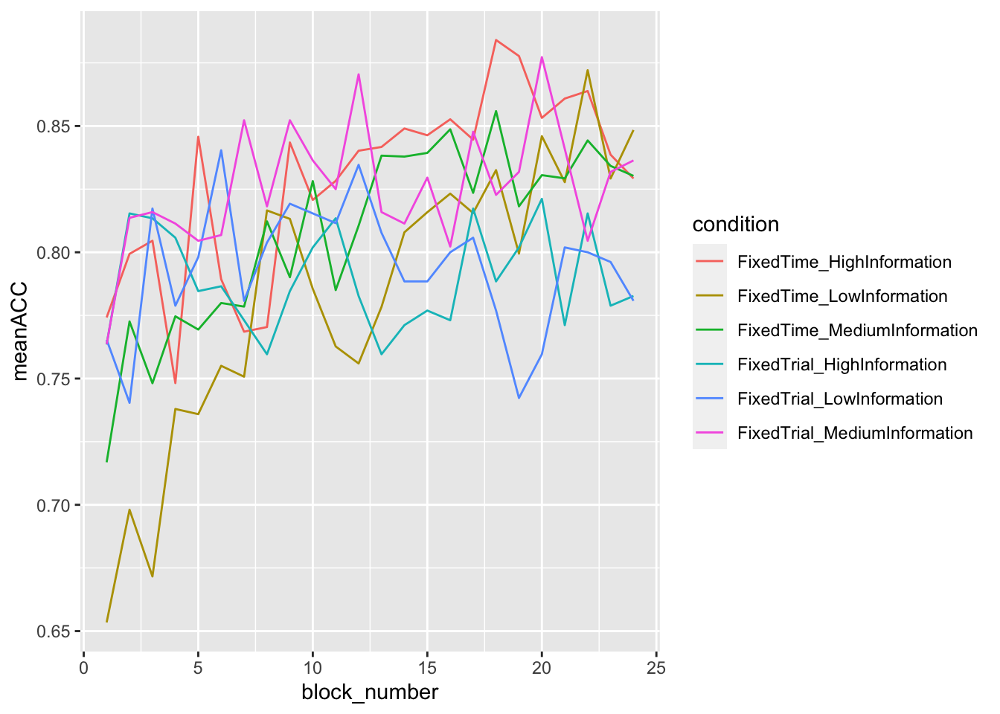
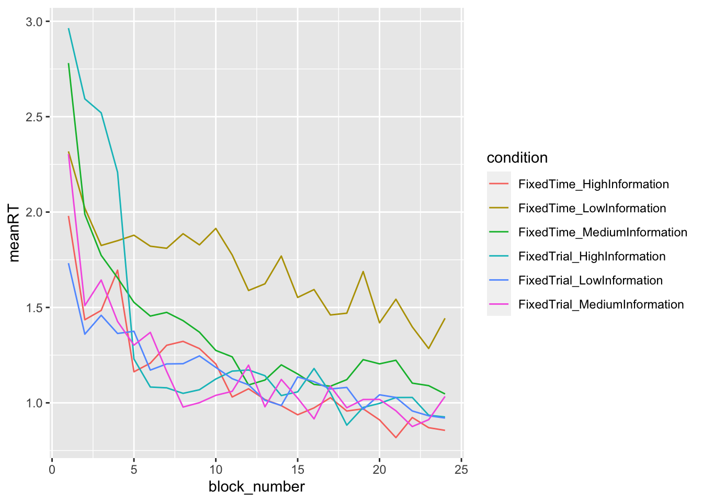
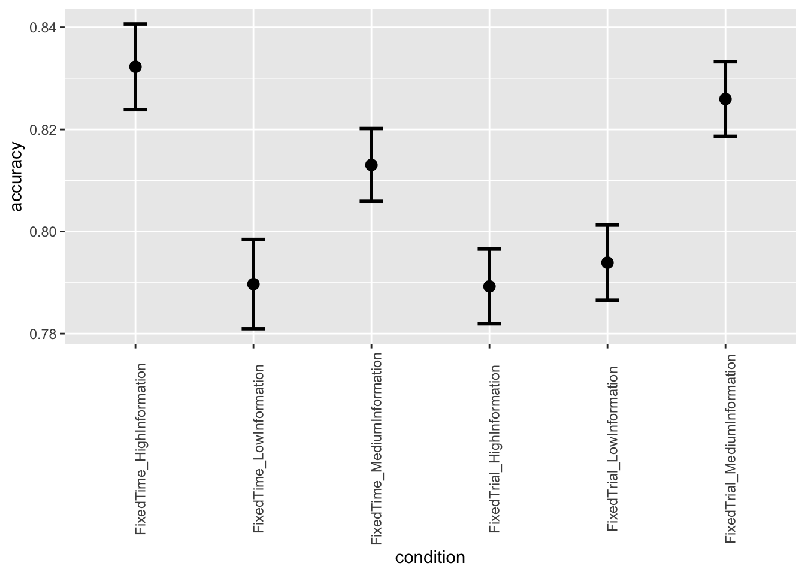
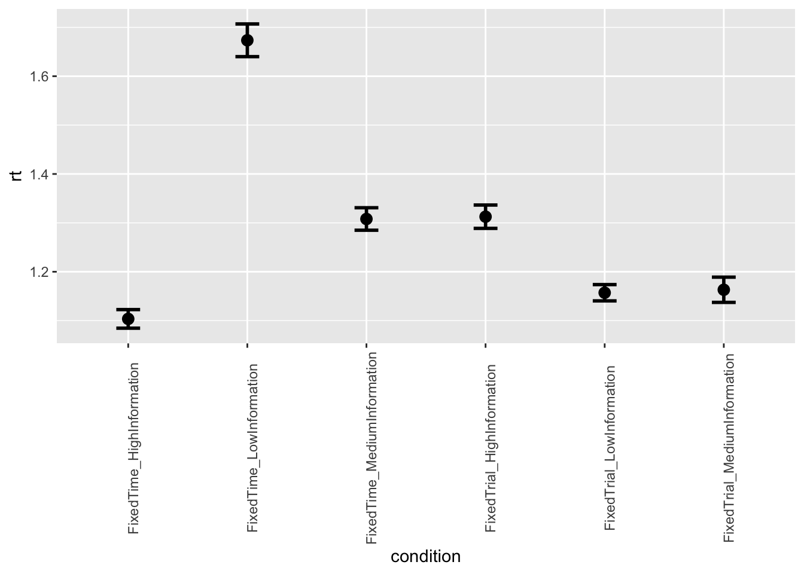
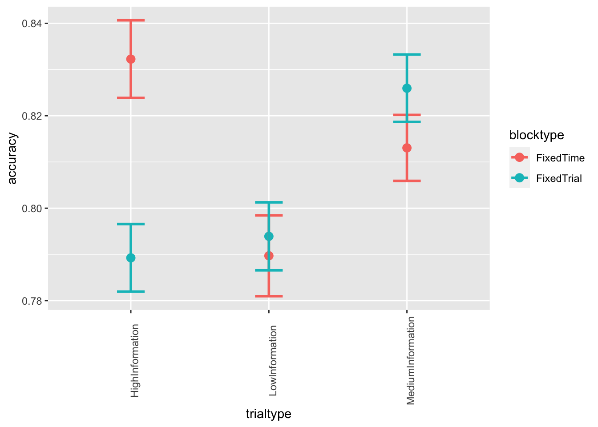
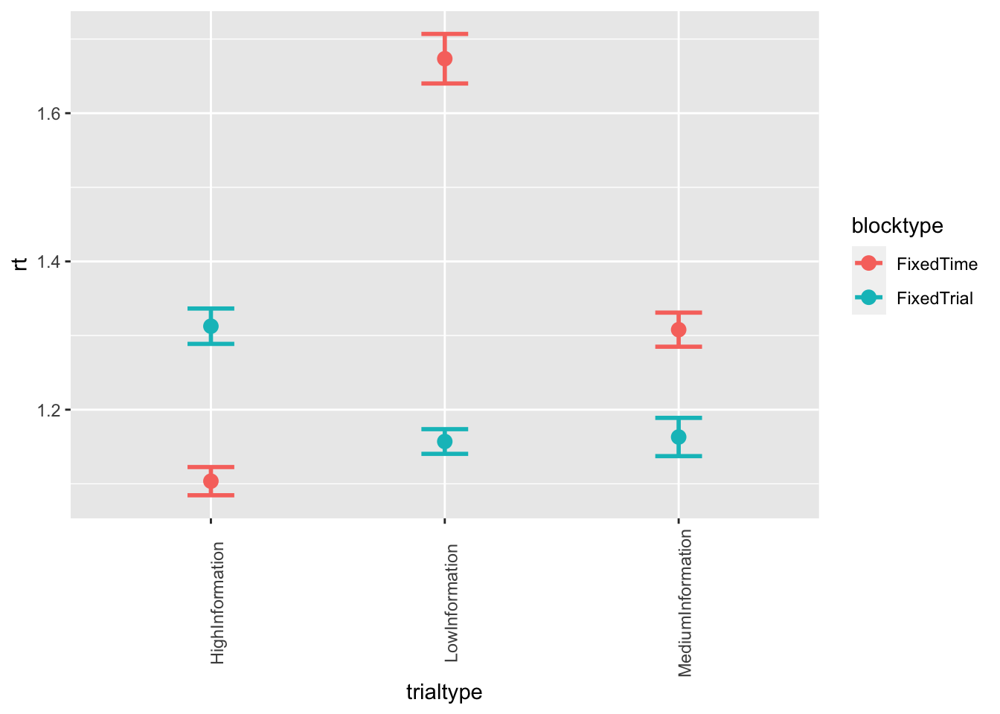
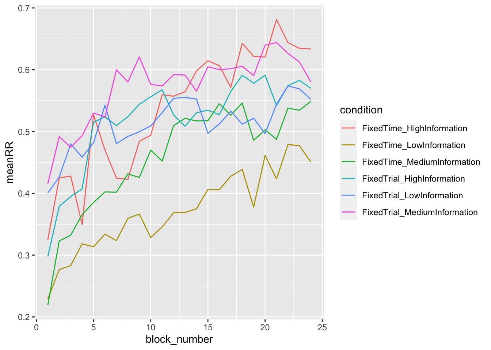
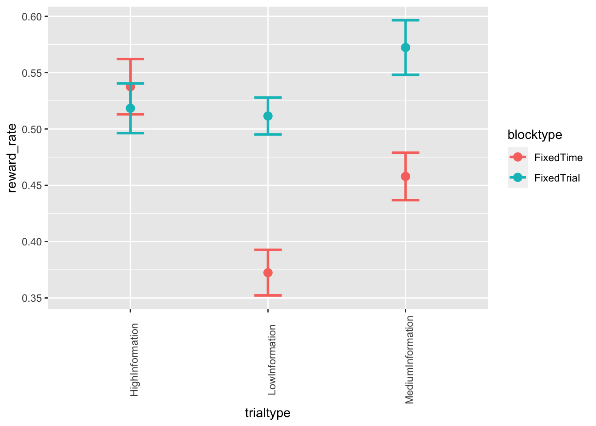

library(tidyverse)
# define the data folder
data_folder = '~/Dropbox/teaching/r-course22/data/final_project/'
# define lists of files
list_files = paste(data_folder, list.files(path=data_folder), sep="")
# apply the read_delim function to each element in the list
data_list = lapply(list_files, function(x) read_delim(x, delim='\t'))
# loop through all the participants to add the participant number as a column as well as the name of the file, since we have no other way to know in which conditions the participants were in
data = NULL
participant = 0
for (n in 1:(length(data_list))){
participant = participant + 1
cond_list = strsplit(list_files[n], "_")
condition = paste(cond_list[[1]][3], "_", cond_list[[1]][4], sep="")
data=rbind(data,cbind(participant=participant, condition=condition, data_list[[n]]))
}head(data)## participant condition blkNum trlNum coherentDots numberofDots percentCoherence winningDirection response correct
## 1 1 Norm_Time 1 1 4 40 10 left left 1
## 2 1 Norm_Time 1 2 4 40 10 left right 0
## 3 1 Norm_Time 1 3 4 40 10 right left 0
## 4 1 Norm_Time 1 4 4 40 10 right left 0
## 5 1 Norm_Time 1 5 4 40 10 left left 1
## 6 1 Norm_Time 1 6 4 40 10 left left 1
## eventCount averageFrameRate RT
## 1 51 15.389 3314
## 2 40 15.250 2623
## 3 11 16.492 667
## 4 19 15.690 1211
## 5 99 15.175 6524
## 6 15 16.060 934As you can see, there are a few things to fix to make the dataset look a bit cleaner. It’s on you now to do the rest. The final data should consist of the following columns:
The columns in the dataset that are not in this list you should remove. The labels of the column that are different you should change to the ones below.
data = rename(data,
block_number = blkNum,
trial_number = trlNum,
percent_coherence = percentCoherence,
dots_direction = winningDirection,
accuracy = correct,
rt = RT)
data = mutate(data,
condition = recode(condition,
Norm_Trial = "FixedTrial_LowInformation",
Info_Trial = "FixedTrial_MediumInformation",
Optim_Trial = "FixedTrial_HighInformation",
Norm_Time = "FixedTime_LowInformation",
Info_Time = "FixedTime_MediumInformation",
Optim_Time = "FixedTime_HighInformation"),
rt = rt/1000)
data = select(data, -c("coherentDots", "numberofDots", "eventCount", "averageFrameRate"))
head(data)## participant condition block_number trial_number percent_coherence dots_direction response accuracy
## 1 1 FixedTime_LowInformation 1 1 10 left left 1
## 2 1 FixedTime_LowInformation 1 2 10 left right 0
## 3 1 FixedTime_LowInformation 1 3 10 right left 0
## 4 1 FixedTime_LowInformation 1 4 10 right left 0
## 5 1 FixedTime_LowInformation 1 5 10 left left 1
## 6 1 FixedTime_LowInformation 1 6 10 left left 1
## rt
## 1 3.314
## 2 2.623
## 3 0.667
## 4 1.211
## 5 6.524
## 6 0.934summarize(data, n_distinct(participant))## n_distinct(participant)
## 1 85summarize(group_by(data, condition), n_distinct(participant))## # A tibble: 6 x 2
## condition `n_distinct(participant)`
## <chr> <int>
## 1 FixedTime_HighInformation 14
## 2 FixedTime_LowInformation 16
## 3 FixedTime_MediumInformation 16
## 4 FixedTrial_HighInformation 13
## 5 FixedTrial_LowInformation 13
## 6 FixedTrial_MediumInformation 13data = mutate(data,
blocktype = recode(condition,
FixedTrial_LowInformation = "FixedTrial",
FixedTrial_MediumInformation = "FixedTrial",
FixedTrial_HighInformation = "FixedTrial",
FixedTime_LowInformation = "FixedTime",
FixedTime_MediumInformation = "FixedTime",
FixedTime_HighInformation = "FixedTime"))
trials_blocktype = left_join(summarize(group_by(data, participant), n_trials=n()),
distinct(data, participant, blocktype),
by="participant")
summarize(group_by(trials_blocktype, blocktype), mean=mean(n_trials))## # A tibble: 2 x 2
## blocktype mean
## <chr> <dbl>
## 1 FixedTime 775.
## 2 FixedTrial 960summarize(group_by(data, condition), meanRT=mean(rt), meanACC=mean(accuracy))## # A tibble: 6 x 3
## condition meanRT meanACC
## <chr> <dbl> <dbl>
## 1 FixedTime_HighInformation 1.21 0.768
## 2 FixedTime_LowInformation 1.59 0.738
## 3 FixedTime_MediumInformation 1.33 0.801
## 4 FixedTrial_HighInformation 1.31 0.789
## 5 FixedTrial_LowInformation 1.16 0.794
## 6 FixedTrial_MediumInformation 1.12 0.785data = mutate(data,
slow_trials = case_when(
rt >= 5 ~ 1,
rt < 5 ~ 0),
fast_trials = case_when(
rt <= .15 ~ 1,
rt > .15 ~ 0))
participant_performance = summarize(group_by(data, participant),
meanRT=mean(rt),
meanACC=mean(accuracy),
perc_slow_trials = mean(slow_trials)*100,
perc_fast_trials = mean(fast_trials)*100)
filter(participant_performance, perc_slow_trials >= 10)## # A tibble: 7 x 5
## participant meanRT meanACC perc_slow_trials perc_fast_trials
## <dbl> <dbl> <dbl> <dbl> <dbl>
## 1 28 2.67 0.805 10.1 0
## 2 47 4.79 0.729 36.3 0
## 3 58 2.56 0.644 11.1 0.208
## 4 70 2.81 0.673 10.6 0
## 5 82 3.25 0.556 17.9 0
## 6 83 2.75 0.906 15.2 0
## 7 85 2.18 0.709 11.8 0filter(participant_performance, perc_fast_trials >= 10)## # A tibble: 0 x 5
## # … with 5 variables: participant <dbl>, meanRT <dbl>, meanACC <dbl>, perc_slow_trials <dbl>, perc_fast_trials <dbl>Exclude from the dataset the participants that have less than 60% accuracy. The trials with a response time less than 150 ms or greater than 5000 ms should be also excluded. Check that the accuracy variable only contains 0 and 1.
participants_to_exclude = filter(participant_performance, meanACC < .6)$participant
for (n in 1:length(participants_to_exclude)) {
data = data %>%
filter(participant != participants_to_exclude[n])
}Now it’s time to visualize the data set.
grouped_data = group_by(data, condition, block_number)
data_summary = summarise(grouped_data, meanRT = mean(rt), meanACC = mean(accuracy))## `summarise()` has grouped output by 'condition'. You can override using the `.groups` argument.ggplot(data = data_summary, mapping = aes(x = block_number, y = meanACC, color=condition)) +
geom_line()
ggplot(data = data_summary, mapping = aes(x = block_number, y = meanRT, color=condition)) +
geom_line()
ggplot(data = data, mapping = aes(x = condition, y = accuracy)) +
stat_summary(fun = "mean", geom="point", size=3) +
stat_summary(fun.data = mean_cl_normal, geom = "errorbar", size=1, width=.2) +
theme(axis.text.x = element_text(angle = 90))
ggplot(data = data, mapping = aes(x = condition, y = rt)) +
stat_summary(fun = "mean", geom="point", size=3) +
stat_summary(fun.data = mean_cl_normal, geom = "errorbar", size=1, width=.2) +
theme(axis.text.x = element_text(angle = 90))
Alternatively:
data = mutate(data,
trialtype = recode(condition,
FixedTrial_LowInformation = "LowInformation",
FixedTrial_MediumInformation = "MediumInformation",
FixedTrial_HighInformation = "HighInformation",
FixedTime_LowInformation = "LowInformation",
FixedTime_MediumInformation = "MediumInformation",
FixedTime_HighInformation = "HighInformation"))
ggplot(data = data, mapping = aes(x = trialtype, y = accuracy, color=blocktype)) +
stat_summary(fun = "mean", geom="point", size=3) +
stat_summary(fun.data = mean_cl_normal, geom = "errorbar", size=1, width=.2) +
theme(axis.text.x = element_text(angle = 90))
ggplot(data = data, mapping = aes(x = trialtype, y = rt, color=blocktype)) +
stat_summary(fun = "mean", geom="point", size=3) +
stat_summary(fun.data = mean_cl_normal, geom = "errorbar", size=1, width=.2) +
theme(axis.text.x = element_text(angle = 90))
In the paper, they define the reward rate as:
\(\frac {PC}{MRT + ITI + FDT + (1-PC)*ET}\)
where MRT and PC refer to the mean correct response time and probability of a correct response, ITI is the inter-trial interval (i.e., 100 ms), FDT is the feedback display time (i.e., 300 ms), and ET is the error timeout (i.e., 500 ms).
By calculating the MRT and PC per block per participant (i.e., create
a summary using participant and block_number
as grouping variables), you can calculate the reward_rate
by filling in the rest of the equation above.
When you are done, you can add the reward rate to the plot in Part 1.4 (so recreate the full Figure 2 from the paper), and also plot the mean reward rate per condition, as you did in Part 1.4 for accuracy and RT.
grouped_data_pos = group_by(filter(data, accuracy > 0), participant, block_number)
grouped_data = group_by(data, participant, block_number)
data_summary = full_join(summarise(grouped_data_pos, MRT = mean(rt)),
summarise(grouped_data, PC = mean(accuracy)))## `summarise()` has grouped output by 'participant'. You can override using the `.groups` argument.
## `summarise()` has grouped output by 'participant'. You can override using the `.groups` argument.## Joining, by = c("participant", "block_number")data_summary = full_join(data_summary,
distinct(data, participant, block_number, condition, blocktype, trialtype))## Joining, by = c("participant", "block_number")data_summary = mutate(data_summary,
reward_rate = PC/(MRT + .1 + .3 + (1 - PC)*.5))grouped_data_summary = group_by(data_summary, condition, block_number)
data_summary_summary = summarise(grouped_data_summary, meanRR = mean(reward_rate))## `summarise()` has grouped output by 'condition'. You can override using the `.groups` argument.ggplot(data = data_summary_summary, mapping = aes(x = block_number, y = meanRR, color=condition)) +
geom_line()
ggplot(data = data_summary, mapping = aes(x = trialtype, y = reward_rate, color=blocktype)) +
stat_summary(fun = "mean", geom="point", size=3) +
stat_summary(fun.data = mean_cl_normal, geom = "errorbar", size=1, width=.2) +
theme(axis.text.x = element_text(angle = 90))